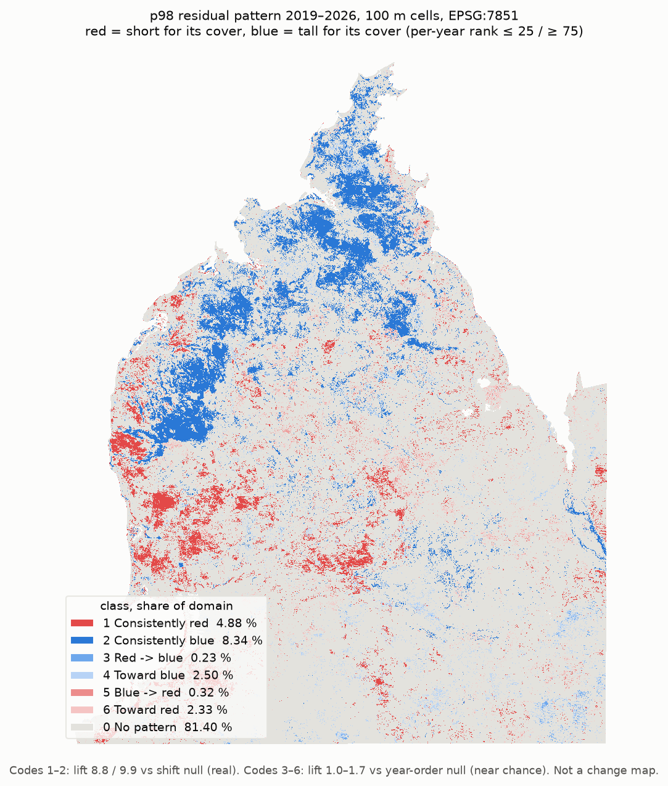

6 · Time pattern 2019–2026: where red and blue persist
MTE p98 residual maps, 6 years (2019, 2021, 2023, 2024, 2025: PALSAR + S1 + S2; 2026: NISAR + S1 + S2), area mean on one 100 m EPSG:7851 grid. Per-year rank, so year-wide shifts drop out.

Method
- Per year: residual r = p98 − g(cover) from that year's MTE maps (5 · p98 residual).
- Area mean of per-px r into 100 m cells; a cell is valid if ≥ 50 % of it is valid. Domain = valid in all 6 years.
- Per-year percentile rank over the domain: red = rank ≤ 25, blue = rank ≥ 75.
- Consistent = red (blue) in ≥ 5 of 6 years and never blue (red).
- Trend = Mann–Kendall S on rank vs year, exact one-sided p ≤ 0.05 (S ≥ 10). Start / end = mean rank of the first / last 2 years.
Result
| code | class | share | km² | share, pindan | lift (null) |
|---|---|---|---|---|---|
| 0 | No pattern | 81.40 % | 20,578 | 77.67 % | 0.99 (year order) |
| 1 | Consistently red | 4.88 % | 1,233 | 5.85 % | 8.76 (shift) |
| 2 | Consistently blue | 8.34 % | 2,109 | 11.05 % | 9.91 (shift) |
| 3 | Red -> blue | 0.23 % | 58 | 0.15 % | 1.24 (year order) |
| 4 | Toward blue | 2.50 % | 633 | 2.04 % | 1.13 (year order) |
| 5 | Blue -> red | 0.32 % | 81 | 0.53 % | 1.70 (year order) |
| 6 | Toward red | 2.33 % | 589 | 2.71 % | 1.05 (year order) |
Domain: 2,528,181 cells of 100 m valid in all 6 years (253 km²; 815,351 in pindan). Lift = share / null share. Shift null: each year's map moved 10–30 km (consistency by chance). Year-order null: random year order per cell (trend by chance).
source: class_defs/outputs/resid_trend/classes_2019_2026.csv (2026-11-04 22:27); class_defs/outputs/resid_trend/summary.json (2026-11-04 22:27)
Read.
Consistent red / blue is real: 9–10 × the shift null.
Trend classes (codes 3–6) are near chance (lift 1.0–1.7): a trend cell is a candidate, not evidence.
Use trend cells only in clusters, after a fire overlay.
Checks
| Check | Result |
|---|---|
| Rank correlation between years (Spearman, 100 m) | 0.33–0.52 |
| Same class with and without 2026 | 88 % of domain cells |
| Against the filtered-LiDAR / EPSG:32751 run | 94.2 % of cells keep their class |
| Residual SD at 100 m, per year | 1.03 (2023) to 1.39 m (2021) |
source: REPORT_resid_trend.txt §2, §5; REPORT_unf_change.txt §5 (fixed text).
Caveats
- Acquisition year is recoverable from the bands. Ranks remove year-wide shifts only, not spatial artefacts.
- PALSAR mosaic strip seams step the maps (REPORT_palsar_date.txt): straight edges are suspect.
- 2026 is another sensor (NISAR) and another model.
- Red = short for its cover also after fire (resprouting); red → blue can be post-fire recovery. Fire history (NAFI) is not overlaid yet.
- All labels are 2025 / 2026 LiDAR: accuracy degrades backwards in time.
- Per-px r has K-fold R² about 0.5; 100 m cells are better, but not validated over time.
- Not a change map: it shows where a structure contrast persists, not how much the vegetation changed.
Files
E:\nisar_2026\regression\trend\:p98_resid_pattern_2019_2026_100m.tif(not yet available) (uint8 codes, 255 = outside the domain),p98_resid_trend_2019_2026_100m.tif(not yet available) (Sen slope, MK S and p, ranks),p98_resid_MTE_stack_2019_2026_100m.tif(not yet available) (r per year),p98_resid_pattern_2019_2025_100m.tif(not yet available) (PALSAR years only).- QGIS:
G:\Dampier\Dampier.qgz(layers point at the canonical paths). - Code: resid_trend.py. Tables:
class_defs\outputs\resid_trend\.